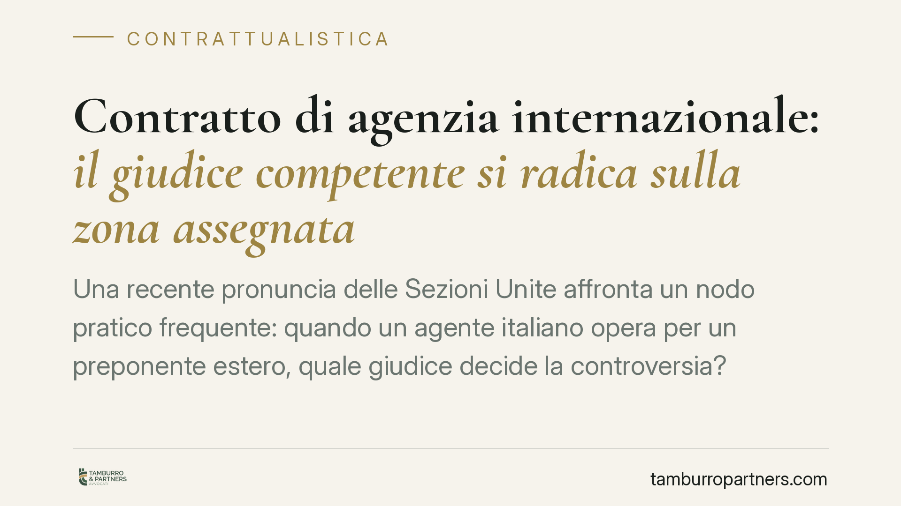

Contratto di agenzia internazionale: il giudice competente si radica sulla zona assegnata
Una recente pronuncia delle Sezioni Unite affronta un nodo pratico frequente: quando un agente italiano opera per un preponente estero, quale giudice decide la controversia? La risposta ancora la giurisdizione alla zona territoriale assegnata dal contratto, non alla sede dell'impresa né al luogo del lavoro da remoto. Un criterio oggettivo, con precise ricadute per agenti e preponenti.

Il caso
Un agente italiano agisce contro una società di diritto olandese per crediti derivanti da un contratto di agenzia. L'attività dell'agente si svolgeva in parte da remoto e la preponente aveva sede all'estero. La questione preliminare è la giurisdizione: davanti a quale giudice va instaurata la causa?
Secondo una recente pronuncia delle Sezioni Unite civili della Corte di Cassazione, il criterio dirimente non è la sede dell'impresa preponente, né il luogo fisico da cui l'agente lavora, bensì la zona territoriale assegnata all'agente dal contratto.
*Nota redazionale: gli estremi identificativi della decisione vanno verificati alla fonte prima di ogni utilizzo processuale.*
Inquadramento normativo
La materia è regolata dall'art. 7 del Regolamento UE n. 1215/2012 (cd. Bruxelles I bis), che disciplina la competenza giurisdizionale in materia civile e commerciale nell'Unione. In deroga al foro generale del domicilio del convenuto, il n. 1, lett. b) prevede un foro speciale per i contratti: nella prestazione di servizi, il giudice competente è quello del luogo in cui i servizi sono stati o avrebbero dovuto essere prestati.
Il contratto di agenzia rientra pacificamente tra le prestazioni di servizi. Il punto non è nuovo: la Corte di giustizia dell'Unione europea, con la sentenza *Wood Floor Solutions* (C-19/09), aveva già stabilito che, quando l'agente presta la propria attività in più Stati membri, il criterio di collegamento è il luogo della prestazione principale dei servizi, da individuare in base al contratto o, in mancanza, all'esecuzione effettiva.
La pronuncia delle Sezioni Unite si colloca dunque nel solco eurounitario: la zona territoriale assegnata è la traduzione concreta e verificabile di quel "luogo di prestazione principale" già indicato dalla CGUE. Non un'invenzione interna, ma l'applicazione coerente di un principio consolidato.
La ratio: un dato oggettivo
Il pregio del criterio è la sua stabilità. La zona territoriale è un elemento contrattuale, scritto, non manipolabile a posteriori dalle scelte organizzative delle parti. Il lavoro da remoto, sempre più diffuso, rischierebbe altrimenti di rendere incerta la giurisdizione: se contasse il luogo fisico da cui l'agente si collega, basterebbe uno spostamento per cambiare il foro competente.
Ancorando la giurisdizione alla zona pattuita, si evitano forum shopping e incertezze applicative. Chi firma sa già, in linea di principio, dove potrà agire o essere convenuto.
Il rapporto con la clausola di scelta del foro
Un passaggio spesso trascurato riguarda l'art. 25 del Regolamento UE n. 1215/2012, che consente alle parti di designare convenzionalmente il giudice competente (proroga di competenza). Si tratta di un dato decisivo: una clausola di scelta del foro validamente stipulata prevale sul foro speciale dell'art. 7.
In altri termini, il criterio della zona territoriale opera in via suppletiva, cioè quando le parti nulla abbiano pattuito. Se il contratto contiene una clausola di foro esclusivo redatta secondo i requisiti formali dell'art. 25 (forma scritta o equivalente), sarà quella a governare la giurisdizione, a prescindere dalla zona assegnata.
La verifica preliminare, quindi, è duplice: prima si controlla se esiste una clausola valida; solo in sua assenza si applica il criterio della zona.
Implicazioni pratiche
Per l'agente, la certezza del foro incide sulla convenienza ad agire: sapere in anticipo davanti a quale giudice si radica la lite consente di valutare costi, tempi e diritto applicabile.
Per l'impresa preponente, la lezione è chiara: la definizione della zona nel contratto non è una formalità commerciale, ma una scelta con effetti processuali diretti. Una zona ampia o mal definita può ampliare l'esposizione a fori sgraditi.
Cosa fare in concreto
- Verificate la clausola di foro. Prima di ogni valutazione sulla zona, controllate se il contratto contiene una clausola di scelta del giudice conforme all'art. 25 Reg. 1215/2012.
- Definite la zona con precisione. Indicate in modo puntuale il territorio assegnato all'agente: è il dato su cui si radicherà la giurisdizione in assenza di clausola.
- Non affidatevi al luogo del lavoro da remoto. Non consideratelo un criterio di collegamento: è irrilevante ai fini della competenza.
- Coordinate giurisdizione e legge applicabile. Verificate la coerenza tra foro competente e diritto sostanziale applicabile, per evitare disallineamenti costosi.
- Rivedete i contratti in essere. Sui rapporti internazionali già attivi, valutate un aggiornamento delle clausole di zona e di foro alla luce dell'orientamento in esame.
Disclaimer
Contributo informativo a cura di Tamburro & Partners Avvocati - Avv. Giuseppe Tamburro. Non costituisce parere legale.
Ogni contratto ha il suo equilibrio.
Se vuoi una revisione delle clausole o una redazione su misura, scrivi allo studio. Ti rispondiamo entro un giorno lavorativo.